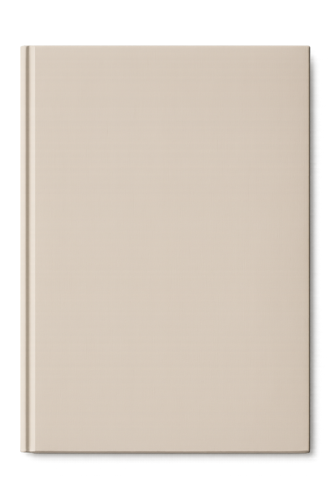

Capa

Sobre
Sou eu o Nuvem
Sumário
- Capa
- Sobre
- Sumário
- Haicai de gole
- Textículos Camisetas pretas
- Haicai me leve
- Haicai Malescrito
- Haicai de jogos
- Haicai de amigos
- Haicaiu o PIB
- Haicai de PIB
- Haicai de espera
- Haicai de Ânsia
- Texticulos Descalços fazendo o caminho
- Haicai Destóico
- Haicai de maratona
- Haicai de Decalque
- Textículos Culpa e resignação
- Haicai de Desencontro
- Haicai Fora do ar
- Haicai Nefelibata
- Haicai de rodeio
- Haicai de dia livre
- Haicai de frustração
- Haicai Favela
- Haicai dispoente
- Haicai de Equilíbrio
- Poesias Hombridade Solo
- Haicai de veto
- Textículo 55 Transfuga de Classe, Mudança e Caminhos
- Haicai Revitalizar
- Haicai de Acesso
- Haicai Sankofa
- Haicai de fim
- Haicai Á vó nova
- Haicai Circular
- Haicai de partilha
- Haicai de Rigidez
- Haicai Recontinuar
- Haicai Hiperativo
- Haicai Aos Sábados
- Poeminha de Transbordo
- Poema palíndromo Ame… Ó Poesia
- Textículo 34 Delírios e Devaneios
- Haicai de programa
- Haicai Distraído
- Haicai em Chiaroscuro
- Haïku Impressionniste
- Versos Roubados Poesia à Rosa
- Poesia Hoje fui contornado por um arco Iris
- Haicai tampouco
- Haicai de Pai
- Haicai de Coabito
- Haicai de Faxina
- Haicai de recursos humanos
- Haicai de Fome
- Haicai Compensatório
- Haicai de Paradeiro
- Haicai Geracional
- Haicai de Parabéns
- Haicai de Skank
- Haicai de Burnout
- Haicai de Sonho
- Haicai Regado
- Haicai Podado
- Haicai Respire
- Haicai Eu Esqueço
- Haicai Corrompido
- Poema Hoje contornei um arco íris
- Haicai de Arco íris
- Haicai só hoje
- Haicai Revisto
- Haicai Doa se
- Haicai Horizontal
- Haicai Bilingue
- Haicai Brasílis
- Haicai Dejavu
- Haicai de Penso
- Haicai Extremamente Fácil
- Haicalismo
- Haicai de Pensamento
- Haicais de seria
- Palindromo Ó vovó
- Haicai vulnerável
- Haicai Tupinambá
- Textículo Reencontrado 1 Pés de vento
- Poesias reencontradas Versinho de Dor
- Poesias Reencontradas Rascunhicídio
- Poesias Reencontradas Natureza da árvore
- Poesias Reencontradas Fim do ano sem fim
- Poesias Reencontradas Falta
- Poesias Hoje sairei de casa
- O tempo não para
- Haicai de Passeio
- Haicai Amarelo
- Haicai Caminha
- Haicai Reencontrado
- Haicai de Imbróglio
- Haicai de desamparo
- Textículos 21 Aviso estou morrendo.
- Haicai Insit
- Haicai de emergência
- Haicai comentado
- Haicai Essencialista
- Haicai de semeador
- Haicai de Escritura
- 575 Haicais 202b Haicai a Ozzy
- Haicai de Fofoca
- Haicai de Preenchimento
- Haicai a Madonna
- Apesar de Você
- Haicai Devirista
- Haicai Latino
- Textículos 8 Timbres, Personas e Descobertas
- Poesias de Luz Fotografia de Fim de dia
- Haicai de Pintura
- 575 Haicai 191 Haicai de Sementes
- Haicai Hostil
- Haicai de Mão
- Haicai 16mil
- Haicai de Garra
- Haicai de Passagem
- 575 Haicai 185 Haicai Temporão
- Haicai de Arte
- Haicai de Bailarina
- Haicai Pela Metade
- Haicai de convalescência
- Haicai de Resistência
- Haicai Vital
- Haicai Mudo
- Pequenos Poemas Mudança
- Haicai de Trauma
- Haicai Luto
- Haicai de frete
- Haicai de mudança
- Poemas Palindromos Ei! Erra! Farreie!
- Haicai de resmas
- Haicai era Acróstico
- Poema Palindromo O colo
- Haicais Acrósticos
- Haicai Aos acrósticos
- Haicai de Legado
- Haicai à Antônia
- Pequenos Poemas Só então vai se tornar
- Haicai Ora acróstico
- Haicai São acrósticos
- Haicais Materiais Sensíveis
- Haicai aos acrósticos
- Haicai de Valeu
- Haicai de Quermesse
- Haicai de Ontem
- Haicai de Vidro
- Haicai de Amizade
- Haicai de Amor
- Haicai de Melhores Pessoas
- Haicai Proibido
- Haicai de Entrega
- Haicai de Porcelana
- Haicai de Cristais
- Haicai de Louça
- Haicai de ficha
- Haicai de Sono
- Haicai Revivido
- Haicai de Passagem
- Texticulo 13 Perdão
- ANÚNCIO Agora o blog tem Feed!
- Haicai à Mujica
- Haicai de pet
- Haicai de Vazio
- Haicai de acaso
- Haicai de enterrador
- Haicai de Nunca Mais
- Haicai do garoto
- Haicai Eventual
- Haicai de Tempo
- Ananá, Banana, Ana
- Haicai de Trinta
- Haicai de Aniversário
- Haicai Original
- Haicai Íntimo
- Haicai de velho
- Textículos 5 Rejeição
- Haicai Desoriginalizado
- Haicais de cabeça
- Haicai de Samba
- Haicais coincidente
- Haicai Quaresmal
- Poesia Sem fins lucrativos
- Haicai Limerente
- Haicai de Refúgio
- Haicai de Ruptura
- Poemas Palíndromo Eu quê
- Textículo 3 Sobresalências
- Poemas Palíndromo Da Terra
- Haicai de diferença
- Haicai Colorido
- Haicai Atentoh
- Textículo 2 Troco acolhimento
- Haicai de coração
- Insônia Poética Refluxo gastro encefálico
- Haicai à Ritalee
- Poesias O mímico
- Haicais de Tratamento
- 575 Haicais 69 Haicai Sentido
- 575 Haicais 68 Haicai Incontido
- Haicai autocorreto
- 575 Haicais 65 Haicais Substituto
- Soneto Palindromia Sonética
- Poemas Palíndromos Pare Lola descanse
- Haicai Insone
- Haicai Brutalista
- Poemas Palíndromos Ramos a somar
- Haicai Relaxante
- Haicai às Eunices
- Haicai afiado
- Haicai Haver
- Textículo 1 Movimentação
- TDAHaicai
- Hai Cai de Patins
- Haicais enterrados
- Haicai de ônibus
- Haicai Lunar
- Haicai Sobre Vida
- Haicais de Fios e fé
- Haicais Silenciosos
- Pequenos Poemas Pequeno Espacinho
- Haicais Haicais sobre nós
- Poesia Errada Prioridades
- Poesia Roubada Tu me manques
- Haicai Apagado
- Poemas Palíndromos Reviver e viver
- Haicai Reduzido
- Haicai de Autoengano
- Haicai excitado
- Haicai derramado
- Haicai espinhoso
- Haicai de Uva
- Haicai Aéreo
- Haicai Cítrico
- Haicai de Parede
- Um Haicai Sobre Nós
- Haicai pro futuro
- Haicai Do Silêncio
- Haicai da Indiferença
- Poesias Ágata ou Cacos de calcedônia, quartzo e ametista
- Poesia Manhãs de segunda ou Equilíbrio de gatos
- Pequenos Poemas A Casa
- Oração Proteção
- Insônia Poética O Primeiro Notívago
- Haicai do Aterro
- Haicai Inaugural
- Primeiros Haicais
- Poemas palíndromo Ser, e viver reviveres
- Haicai do Morro
- Haicai Fiado
- Haicai Doído
- Samba de fé
- Haicai para viagem
- Haicai sobre Haicais
- Haicai de Aprendizado
- Haicai de Sonho
- Haicai de Força
- Haicai do Grito
- Haicai de Liberdade
- Haicai do compromisso
- Haicai de Alma
- Haicai de Ano novo
- Poesia Me ser e tecer
- Poesias Floresça
- Poemas Roubados Tacituras
- Poemas Palíndromo À diva
- Haicais do Arvoredo
- Poemas Roubados Tenho roubado versos
- Creditos
575 Haicais 66 - Haicai de gole
Vida é sopa
E eu só tenho garfo
Bebo de gole
Textículos: Camisetas pretas
O conforto das camisetas pretas, Não desbotam, Não amassam, Secam no corpo e não pegam odor.
São macias, no frio esquentam Também são frescas quando calor
Encontrei nesse guarda-roupa incolor, A facilidade das manhãs preguiçosas De olhos fechados pego uma delas Sem medo do branco ter virado rosa.
É realmente um feito tecelão Tecido macio que veste em conforto Mesmo que saia do varal molhada A camisa preta seca no corpo.
Visto camisas de malha fria Visto preto, por dentro e por fora Combinam comigo, e com meus dias Básico, prático e distantes da aurora
Encontrei, nessa praticidade uma forma de poupar tempo, Também lucidez pra viver o momento
A camiseta foi só o começo, repensei os excessos de toda uma vida. No esvaziar encontrei espaço pra respirar………………….
Seria então a camiseta preta minha veste de sempre apesar do preço Não fosse eu pai de um serzinho pequeno, com dote artístico e rosto travesso.
Quando com ele visto cores, sorrisos, visto canetinhas, cola glitter, pincel, guache, lantejoulas e “muitos brilhos”….. Rosa, Amarelo, azul cor de céu.
Por que você diz: “Sem cores é muito chato, o mundo brilhante fica mais bonito. É o que eu acredito!” E o papai também.
Bora viver.
575 Haicais 54 - Haicai me leve
Sono pesadoQue o sonho me leveViagem breve
575 Haicais 57 - Haicai Malescrito
DespreparadoSem sal destemperado Desinspirado
575 Haicais 53 - Haicai de jogos
Noite viradaTabuleiro a mesaEm notivaguês
575 Haicais 52 - Haicai de amigos
Ouvinte vorazE parceiros de risoAmigos fiéis
575 Haicais 50 - Haicaiu o PIB
Ninguém se feriu Quando o PIB caiu Mas parou o Brazil
575 Haicais 49 - Haicai de PIB
Gente tem fome
De arroz, Feijão e pão
Não de PIB não
575 Haicais 47 - Haicai de espera
Ser ansioso Não consegue esperar Desespera-se
575 Haicais 48 - Haicai de Ânsia
Ser Ansioso Ao se ver ocioso Sofre Ânsia
Texticulos - Descalços fazendo o caminho
Lhes convido a caminhar com os pés descalços na grama. Aceitar as pedras pontudas, meter o pé na lama. E assim sentiremos na sola, a relva e água do rio.Nadaremos nus em lagos, também passaremos frio. Pois quando o preço de sentir-se blindado for ao custo de esconder sentimento. Prefiro queimar a cara no sol.E congelar minha bunda no vento. Eu te amoBora viver.
575 Haicais 43 - Haicai Destóico
SamambaiaMedo da sombra de mimNo sol de você
575 Haicais 45 - Haicai de maratona
Em maratonaNão faz corre por poseQuem tem postura
575 Haicais 46 - Haicai de Decalque
Nóis pega lápisCêis desce a borrachaNÃO APAGARÃO!
*Inspirado em “A mema praça” - Emicida, Rashid e Projota
Textículos - Culpa e resignação
Perdoe meus destempero, minhas confusões e desesperos. Minha ausência no seu anseio e meus gritos de pedalada.
Vejo em você um eu que eu não quero repetir, e apesar de aceitar que sua vida é e será sua. É tão duro perceber o quão frágil nós somos e quão pequeno você é meu filho. Peço que perdoe minhas baixas habilidades de pai para um filho de tanta super dotação. Sei que pra você tudo é novo, mas apesar do meu tamanho, apesar de ter a força do “lá” e da alegria do “tukevin”. Hoje eu coleto minhas forças para te mostrar a segurança e a farra que você merece. E escondido em meus lugubres aposentos interiores estou fraco e triste. Opaco e apagado. Sou preenchido de dúvidas e medos em todos os meus momentos. Guardo essas palavras para que no futuro saibas que eu era um novato.Querendo fazer melhor e ansiando ser mais para você e pra nós. Essa é minha primeira vez em tudo isso.E eu estou tentando meu melhor. Com sua chegada, eu aprendi que teve tanta coisa que eu nunca entendi.Que meu pai fazia por mim e que eu anseio fazer por ti. Eu vou encontrar um caminho para funcionar e eu espero que as dores e os traumas sejam menores do que os significados positivos que eu quero deixar. Por que você é a maior alegria de todos nós.
575 Haicais 42 - Haicai de Desencontro
Ele perguntou Como era seu avô Chorou choramos
574 Haicais 41 - Haicai Fora do ar
Não encontradoDomínio erradoAusente de ar
575 Haicais 40 - Haicai Nefelibata
Nuvem noturnaEm noite notívago Dia nubívago
575 Haicais 39 - Haicai de rodeio
Passando aquiSem voltas nem rodeiosPra te desejar
575 Haicais 38 - Haicai de dia livre
Em dia livreSubimos no telhadoDoce Sábado
575 Haicais 37 - Haicai de frustração
DesreguladoMas consciente de siSabio aos cinco
575 Haicais 36 - Haicai Favela
Sonho Sankofa Voltar pegar recontarCantar meu lugar
575 Haicais 35 - Haicai dispoente
Para viver mais Menos dispositivosMais disposição
575 Haicais 34 - Haicai de Equilíbrio
Com segurança Ensino o equilíbrioDa pedalada
Poesias: Hombridade Solo
A maldade é um evento raro, A indiferença, desumanização e covardia, atos mais comuns.
Delineiam a origem dos males do século 21.
Falta na sociedade hombridade, Da figura forte em valores, Integridade moral, honestidade, Quem dos fracos toma as dores
As crises humanitárias do mundo Tem sua raiz nesse solo. A falta de hombridade no Homem, Aquela que sobra na mãe solo.
575 Haicais 33 - Haicai de veto
Poder de vetoVenta ventriloquismos Nas marionetes
Textículo 55 - Transfuga de Classe, Mudança e Caminhos
Firmo meu chão com raízes de mudança. E construo minha casa com paredes de esperança
Estas decoro com mosaicos de afeto. Tecendo arabescos da base ao teto.
Ilumino minha vida com vitrais de memória. Assento no chão com pedaços de estórias.
Busco ao estar na presença da falta, que abra-me espaços pra reflorescer. Busco as estrelas como guias no horizonte pras essas águas que fluem tão longe da fonte.
Vivo a transfuga de classe, social, cultural, sensorial, memorial.
Como disse Leandro Roque, o Poeta Orixá, Onde estiver meu sapato eu chamo de lar. E não sendo dono da terra, sendo a terra, como explica Casé Tupinambá
Assim como no ditado Yorubá,
“Aquele que experimenta mudar-se pra outra vila, vê o caminho como lar”
O ditado que simboliza a ideia de que a pessoa que muda, torna sua existência o entremeio de sua origem e seu habitat.
Tornar-se então a ponte entre mundos e em Ubuntu, inexiste sozinho. Seu lar, seu cerne, sua face e identidade tornam-se em si o próprio caminho.
Em outras palavras, “A rua é nois”. Bora viver.
575 Haicais 32 - Haicai Revitalizar
Revisar o ontemReflorescer hojeRevitalizar
575 Haicais 31 - Haicai de Acesso
Ser vulnerável Honesto e acessível Sinal de força
575 Haicais 28 - Haicai Sankofa
Voltar e pegar Olhar pra trás, SankofáE continuar
575 Haicais 365 - Haicai de fim
Ao fim dando fimO futuro avançaDança a mudança
575 Haicais 363 - Haicai Á vó nova
Avó nova vidaAno novo nonaA diva vó nova
575 Haicais 360 - Haicai Circular
Giro a giroNós construímos laçoPasso a passo
575 Haicais 359 - Haicai de partilha
Quanta partilhaEssa vida me trará Sem compartilhar
575 Haicais 358 - Haicai de Rigidez
Ele ensinarQue ser vulnerável É crescer forte
575 Haicais 357 - Haicai Recontinuar
Recuperação Respirar continuar Recontinuar
575 Haicais 351 - Haicai Hiperativo
No cardápio Exaustão ou Euforia Chicken or Pasta
575 Haicais 347 - Haicai Aos Sábados
Dar um SábadoA toda Sexta-feiraÉ sobreviver
Poeminha de Transbordo
Tu me ensinou a comporEntumecidoTu me enseja ao transbordoEm tu me excedo
Poema palíndromo - Ame… Ó Poesia
Aí, se o poema amarAté o poeta amaAté o poeta ramaAme! Ó poesia Ai se o poeta amarAme ó poeta, ama!Até o poema rama…Até…. Ó poesia Aí, se o poema amarAté o poeta amaAté o poeta ramaAme! Ó poesia
Textículo 34 - Delírios e Devaneios
O destino age sobre o que sabemos.
Se somos pretensamente livres para fazer o que quisermos, mas apenas podemos querer aquilo que conhecemos. Nosso querer é fruto do nosso conhecimento e das informações que temos no momento em que decidimos querer algo. Uma vez possuídos pelo conhecimento, estamos destinados a decidir desejar ou não desejar, o que quer que desejaríamos, se conhecessemos o que, por então, tornaria-se fruto do nosso desejo. O livre arbítrio, ou Liber arbitrium, atribui à nossa racionalidade e emoções a capacidade de julgar e decidir qual caminho seguir. A liberdade de escolher. No entanto, neste tribunal, só podemos julgar os réus que nos são fornecidos e escolher com base nos fatos, autos e informações que temos, decisões racionais, emocionais e límbicas. Somos livres para escolher entre o que desejamos, mas não para escolher desejar o que desejamos. Estamos fadados a cumprir o destino ao qual nosso livre arbítrio nos condena. Desejar o que desejariamos, caso a nós fosse fornecida uma escolha. Somos incapazes de fazer o que não faríamos e de agir de forma contrária ao nosso destino, pois não podemos agir contra a nossa vontade ou desejo de escolher… A não ser por meio de delírio…. Á insanidade, é resguardada a única possibilidade de agir de forma livre do destino, de forma apartada do livre arbítrio. Delírio é a incapacidade do ser em agir conforme sua vontade ou desejo, seu conhecimento e razão, sua emoção e seu estado. Portanto, é na via do delírio que se encontra o espaço único em caminho para contrariar o destino preposto pelo conhecimento e momento. Ao adicionar a insanidade à equação, o destino torna-se impotente ante a real aleatoriedade. A irrazão, não um sinonimo de emoção, é, por definição, a única que pode nos fazer agir de forma separada ao nosso conhecimento, desejo e à maldição do saber. Torna-se unica capaz de alterar o caminho imposto pelo destino. Destino ao qual com nossas escolhas nos destinaríamos. Delire-se e delicie-se. Bora viver.
- Devaneios e delírios inspirados nas series Sandman e Dark da Netflix.
575 Haicais 323 - Haicai de programa
Amarga gramaÀ amargor programaA amarga grama
575 Haicais 320 - Haicai Distraído
Eu me distrai Nunca mais eu vou dormirEu me confundi
575 Haicais 311 - Haicai em Chiaroscuro
Verso inversoEsbóço e rasúroEm chiaroscuro
575 Haicais 310 - Haïku Impressionniste
Peiture et brisureUn verse inverse effacerViens au Clair obscur
Versos Roubados: Poesia à Rosa
Lentamente, nessa terra material Ao longe de minha janela, baixou-se o cantar do rouxinol. No dia ensolarado, destes raios do sol do amanhecer Silenciava o carrilhão de varios sinos Brasileiros.
O Rouxinol se engolia com paixão, como que quisesse gritar o grito do trovão e iluminar o amanhecer. Nunca ouvi, nada mais, belo. No chão, alternadamente dourado e esverdeado, seu canto fazia lembrar uma ofuscação dourada. Nada era tão claro e de tristeza tão crível………….
Poesia roubada
Poesia - Hoje fui contornado por um arco Iris
Hoje um arco-íris veio me visitar. Numa manhã fria, de paisagem belaEncontrava-se um arco em minha janelaArco-íris, colorido, de ponta a ponta… Estava lá, 7 cores, muitos metros,Colorindo o céu montanhoso sulista.Da noite em claro involuntária Que no final pagaria-se “à vista” As vezes….A natureza nos lembra das razões de espiar, tivesse eu descansado à noite, perderia a visita do lindo prismar. O arco colorido e belo,Compunha a paisagem verde,Na beleza de suas curvasMinh’alma saciou a sede. Não só coloria o céu,Também trazia um belo sinal,Pra toda fase de chuva da vidaHá de haver colorido final. Em seu flutuar serenoD’onde a luz expande-se ao céu,O sol a brilhar, a música alegre,Os pássaros matinos fazendo forféu. Entendo agora o que Oxumarê e sua adaga de bronze veio trazer,Em toda chuva que venha na vidaVirá em seguida um reflorescer.
575 Haicais 296 - Haicai tampouco
Você nem sabe O que me aconteceu Tão poucos eus
575 Haicais 293 - Haicai de Pai
Pai por convitePaizinho Paizão e Pai Eu sou Pai VIP
575 Haicais 288 - Haicai de Coabito
Era convívioAmar vira evitarE coabitar
575 Haicais 287 - Haicai de Faxina
A casa arrumo Do limpar e repararVem lá faxina
575 Haicais 286 - Haicai de recursos humanos
Waigu Kobi beefAçougue Cinco EstrelasGrilhões de seda
575 Haicais 276 - Haicai de Fome
Pediu AbraçoFoi abrindo a guelaOferta de paz
575 Haicais 275 - Haicai Compensatório
Saciedade Estômago roncando Ansiedade
575 Haicais 273 - Haicai de Paradeiro
Único leitorCidade conhecidaParadeiro não
575 Haicais 272 - Haicai Geracional
Novo ensinaA viver o velhoA sobreviver
575 Haicais 271 - Haicai de Parabéns
Bolo parabéns Com quem será ou com quensAmo seus nenéns
575 Haicais 260 - Haicai de Skank
Vivi ou sonhei Como Samuel RosaEu ’inda gosto
575 Haicais 259 - Haicai de Burnout
Vender Saúde Onde a doença éLucro pro feitor
575 Haicais 258 - Haicai de Sonho
Ser efemero De existência fugazSonho Perpétuo
575 Haicais 253 - Haicai Regado
De Rega à regaDe Bonsai à Baobá Semente viva
575 Haicais 252 - Haicai Podado
De poda à podaBaobá vira bonsaiSemente seca
575 Haicais 250 - Haicai Respire
Tudo expiraNo vencimento venceEntão inspire
575 Haicais 245 - Haicai Eu Esqueço
Esqueço Tudo Tal Alexandre Pires Menos o amor
575 Haicais 244 - Haicai Corrompido
Metahumano
Memória extendida
Me3҉̛͡͝crR̷͘͢͠uP!̴̡͘͡ corrompida
Poema - Hoje contornei um arco íris
Hoje fui agraciado com um arco-íris Pela estrada chuvosa, contornando as cidades,Encontrei no caminho um aro em metade.Arco-íris, colorido, de ponta a ponta. Estava lá, 7 cores, muitos metros,Colorindo o céu cinza do Inverno Sulista.Nunca em vida fiquei tão feliz, por repensar e trocar de pista. As vezes….A natureza nos lembra das razões de frear, tivessemos seguido o mais curto caminho, perderíamos o seu lindo prismar. O arco colorido e belo,Contrastava à paisagem cinzaNas curvas do contorno cinzentoSua beleza brilhou mais ainda. Não só coloria o céu,Mas vislumbrei seu início-final,Não tinha pote de ouro,Nenhum Duende ou leprechaun. Havia apenas o toque serenoD’onde a luz beija a rés do chão,A chuva lá fora, a música calmaSua mão quente, a tocar minha mão. Entendo agora o que deusa Íris, a mensageira viria a dizer,Nenhum pote de ouro compra, O que a íris do olho não pode ver.
575 Haicais 243 - Haicai de Arco-íris
Pista molhadaContornando as curvasChuva arco-íris
575 Haicais 240 - Haicai só hoje
Só por hoje… Qualquer palavra minhaPreciso ouvir
575 Haicais 239 - Haicai Revisto
Do fim desistoEu ainda existoFinal revisto
575 Haicais 238 - Haicai Doa-se
Doa-se HaicaisPoesias e memórias Doa a quem doer
575 Haicais 237 - Haicai Horizontal
No Horizonte Outra ela outro euSurgirá no sol
575 Haicais 232 - Haicai Bilingue
Nevar, Raven E o poe se opõe Revê, Never
575 Haicais 229 - Haicai Brasílis
Terra BrasílisIndiferença vira Desigualdade
575 Haicais 228 - Haicai Dejavu
Pleno silêncio Sua voz me acordaEra só sonho
575 Haicais 226 - Haicai de Penso
Penso todo diaNo que foi no que seriaLágrima fria
575 Haicais 225 - Haicai Extremamente Fácil
Um dia felizAs vezes muito raroFalar é fácil
575 Haicais 223 - Haicalismo
O HaicailismoBrevemente contemplaA Vida simples
575 Haicais 221 - Haicai de Pensamento
Pensemos sobreAmor e confiança Flexibilidade
575 Haicais 220 - Haicais de seria
Quis queria iaImenso potencialFicou no Faria
Palindromo: Ó vovó
Ó vovóA diva, da vida, A diva, a vadia,aí, dava, Ávida… A diva, da vida, Ó vovó
575 Haicais 217 - Haicai vulnerável
Conexão Mundial VulnerabilidadeLocal seguro
575 Haicais 216 - Haicai Tupinambá
Casé Tupinambá Não sou dono da terraSomos a terra
Textículo Reencontrado 1: Pés de vento
Refletindo um pouco notei a minha própria tolice, e motivação de muitas de minhas mazelas ansiosas. A cada decisão, tenho-as tomado como um perene bloco.Acreditando que construo uma escada à céus, ao paraíso ou lugar qualquer. Tenho construído porém, meu próprio cativeiro, moldo cada decisão para que orne com a cela e vede hermeticamente minha existência a uma caixa de caminhos definidos. Carrego o peso desses tijolos em minha bagagem, carrego também os tijolos quebrados, na afoita tolice de não cometer os mesmos erros. Muito mais sábio era eu na juventude, quando tomava minhas ações como bater de asas, como uma nuvem ao rodopiar com a tempestade. Quando escalava o furacão da vida com os meus pés de vento.E dava vida à uma existência eternamente momentânea. Feliz serei se voltar a ser nuvem, ajustando o curso de onde os ventos soprarem.
Poesias reencontradas: Versinho de Dor
Construo com quem está disposto comigo a desbravar a selva das emoções. Tem a coragem de lidar com o difícil das intempéries das relações. Construo afetos e amizades difíceis com honestidade e sobriedade. Nos momentos da vida mais delicados a empatia encontra a verdade. Construo com ética e conexão, ajuda mutua, apoio, acalento. Não deixo pra vida o que é meu papel, não deixo afetos pro sopro do vento. Mensagem é meio, é letra e é tempo, é tudo destaque a dispor do autor. Esgotei minha voz de empatia e respeito á implorar o olhar do agressor.
Poesias Reencontradas: Rascunhicídio
Rascunhicídio Os escritos escapam as bordasAs idéias esvaem às frestasDo declive acentuado de um cantoArremessados à eterna sesta Anotações saltaram a beiraCaíram à porta do grande salãoGuardaram-se estes em tantos ensaiosEncontraram o fim à “resma”-do-chão Rascunhicidio um crime hediondoSeu próprio pai seria o autorMorreram a prosa, o verso e o traçoHabeas Copias pedia o doutor Contornado à lapis jazia no blocoPobre derrotado, rascunho esquecidoTivesse cuidado o pai distraídoTeria o filho vivido e crescido Finados estes, em abismo deletérioDesencontrados em lixeira ou cemitério.Publicados? Jamais.Apenas rascunhados em sua breve existência.
Poesia Roubada
Poesias Reencontradas: Natureza da árvore
O dono do vaso não é dono da árvore. Tampouco o é o dono da terra. Ela é do sol, do solo, da chuva, a natureza da árvore é dela.
Poesias Reencontradas: Fim do ano sem fim
E enfim…. finda o fim,Crianças voltam pra escola Já consigo ouvir dentro mim Os fuzuês e os jogos de bola Moro na rua da sala de aula Muito vazia no tempo de medo Os barulhinho das rodas de mala Me acordaram feliz hoje cedo Viva a vida! Viva a luz! Vivas as crianças! Viva o SUS! Ouvi a sirene otrodia silente E seu barulho não me incomodou A merenda era boa, o riso contente Essa inocência o mal não levou Outro dia nascia aqui Outro ano começou enfim Não outro ano no calendário Mas um ano novo dentro de mim
- Sobre o fim da pandemia no inicio do século XXI
Poesias Reencontradas: Falta
Me faz falta o esquilo vermelho.Os 3 piratas e o doido francês.Me faz falta o rapaz feiticeiro.As 5 criancas da primeira vez. Me faz falta a ave raivosa.O rato do espaço e o homem bexigaMe faz falta a intimidade.Um pote de doce pra adoçar a vida. Me faz falta as bobas fofocasOs meus confidentes e o velho bombeiro.Me faz falta o que vinha à frente.E escritos perdidos de um mundo inteiro. Me faz falta o dragão do oceano.O casal engraçado, perdido no marMe faz muita falta a negra panteraMe faz falta o prazer de brincar Me faz falta não chorar sozinho,Me faz falta ser ombro e ter,Me faz falta o alemão viajante,Me faz falta gostar de escrever. Me faz falta o tempo perdido,Me faz falta o doce do mel,Me faz falta o ceifeiro da agua,(a)Inda o Vasco da gama me falta. Me faz muita falta o bom cozinheiro,Me faz falta varar madrugadasSinto a falta do urso ao vivo,Me fazem falta as velhas piadas. Me faz falta a imagem bonita,Aquela que tinha do dono do bar.Me faz falta as expectativas,Que tudo na vida ia perdurar. Me faz falta os amigos queridos,Aqueles que a vida levou, não a morte,Me faz falta meu melhor amigo,E me faz falta um abraço de pai.
Poesias: Hoje sairei de casa
Hoje sairei de casaHoje ligarei o celularHoje direi o que sinto E hoje gravarei meus momentos Hoje responderei amigosHoje postarei nas redesHoje escreverei poesiaE Hoje festejarei o dia Hoje chamarei quem eu quiser Hoje receberei visitas Hoje abraçarei meus amigosE falarei até com embaixadores Hoje caminharei na praçaHoje pegarei sol no rostoHoje viajarei se quiserE hoje entrarei no mar Hoje protestarei na ruaHoje dançarei na calçadaHoje votarei livrementeE hoje viverei o hoje Hoje sorrirei em paz Hoje nada me prende Hoje terei liberdadeHoje serei cidadão #EleNão.
575 Haicais 213 - O tempo não para
Dias de par em parComo disse AgenorO Tempo não para
575 Haicais 215 - Haicai de Passeio
Saí de casa Hoje andarei na rua#EleNão
*Lia-se Hashtag
575 Haicais 214 - Haicai Amarelo
Ano passadoComo disse LeandroNesse não morro
575 Haicais 212 - Haicai Caminha
Vida Caminha Destino ao meu sonhoMinha caminha
575 Haicais 211 - Haicai Reencontrado
Pássaro pousaEm fino frágil galhoMas passaro voa
575 Haicais 209 - Haicai de Imbróglio
Ao Locatário A Jurisprudência éSer Feito otário
575 Haicais 210 - Haicai de desamparo
Em desamparoVulnerabilidade Desalentando
Textículos 21 - Aviso: estou morrendo.
Desde que meu pai partiu, conheci a morte. Não como ideia — mas como presença. Silente, constante, inexorável. Descobri que são poucos, pouquíssimos, os que amamos que nos acompanham até nosso fim. Por isso informo, quero que meus amigos me conheçam em vida. — não em flores e silêncio. Meu legado? Como disse antesRelego à Visa, à Mastercard, ao finado Banestado. Desde que conheci a morte, faço exames.E os exames confirmam: estou morrendo.Tenho essa doença incurável chamada Vida. Meu corpo segue seu roteiro,me conduz, sem delicadeza, ao desfecho inevitável. Pouco posso fazer. O mais trágico, no entanto, não é a parte fisiológica… Não bastasse estar morrendo, fui também diagnosticado recentemente com uma insidiosa condição psíquica chamada: Consciência. Pelo que dizem os profissionais, é esta também incurável. Como se não bastasse a morte certa em meu caminho, tenho ainda consciência dessa morte…. Sim, não só morro,como sei que morro… Pra tal condição, a literatura lista sintomas como: desespero crônico, ansiedade, libido, busca por distrações como analgésicos de pensamento.Outros sucumbem à ausência de sentido,de chão. No meu caso, os sintomas são mais agudos.Essa consciência me obriga a perguntar: Quem é esse que morrerá?O que, dentro de mim, deixará de existir com o fim?E quem é o eu, fora de mim, que será ausente? Dessas perguntas, efeitos colaterais ainda mais grotescos derivam: Passei a olhar o tempo como precioso,os momentos como relâmpagos que valem poesia. Contemplo, agora, a delicadeza brevedas pessoas que amo.A fugacidade dos encontros,A beleza do estar se acentua, com o contraste da iminente partida. Olho para cada momento como único e importante. Experiências simples se tornaram sublimes, tornaram-se momentos de êxtase estético e completude.Ao encontrar na simples existência da vida o terror sacro de minha vindoura ausência.
Essa profunda gratidão e pequenês de se maravilhar com as cores da joaninha entre as folhas, Ou observar os pássaros e o por do sol no ápice de um dia difícil, Veio a mim apenas ao olhar para o mais profundo medo abismal que habita no meu íntimo. Incidentalmente, a consciência de minha condição terminal, me fez descobrir que vivo.E essa consciência se faz aterrorizantemente bela e motricial. Bora viver.
575 Haicais 208 - Haicai Insit
Arbor insitusEm Entorpecimento Neuropático
575 Haicais 207 - Haicai de emergência
Emergência Em caso de incêndio Quebre o silêncio
575 Haicais 206 - Haicai comentado
Semea versosCem haicais e poemasSem comentários
575 Haicais 205 - Haicai Essencialista
Essencialismo Manter o essencial ______________
575 Haicais 204 - Haicai de semeador
Ao semeadorNão se planta afetoSem mea dolor
575 Haicais 202 - Haicai de Escritura
Dores lavradasOficializadasEm escritura
575 Haicais 202b - Haicai a Ozzy
Sábado NegroPassando por mudanças Indo pra casa
575 Haicais 201 - Haicai de Fofoca
Ao vulnerável A fofoca protegeTambém entretém
575 Haicais 200 - Haicai de Preenchimento
Em minha casaMais vale a presença Do que o nome
575 Haicais 199 - Haicai a Madonna
Palco escuroA nave solta a trilhaMadonna brilha
575 Haicais 198 - Apesar de Você
Apesar de vocêLá como cantou Chico Hoje é outro dia
575 Haicais 197 - Haicai Devirista
Pra quem se muda O lar é o caminhoMuda-se quem é
575 Haicais 196 - Haicai Latino
Memento MoriPremeditatium Malorumet Carpe Diem
Textículos 8 - Timbres, Personas e Descobertas
Sobre o amor que temos pelas pessoas que as pessoas nos fazem nos descobrir.
Metade do que amei em você era quem você é, grande parte porém, também, quem eu me descobri quando perto de ti. A vida tem dessas coisas de nos fornecer experiências profundamentes estéticas vindas do reflexivo cotidiano de nossas fugazes interações. E dessas, sinto profundo afeto. Sinto saudade de você e sinto falta ainda da parte de mim que ficou aí. Sinto falta do poeta e do escritor. Sinto falta do amigo, da ética e do carinho que buscava demonstrar, e ao demonstrar me tornava. Sinto falta da acidez e da sensatez que eu via em mim, vindas de você. Eu sinto falta do que criei em mim em sintonia contigo. E de sentir quem você era aqui dentro. Era delicioso me sentir tão especial e inteligente. E te expressar de tal forma tão incrível em meu âmago. Eu sinto falta de ti, ainda mais, grande falta do eu distante, que busco reencontrar. Ouço, indassim, esparços sussuros de teu timbre em minha consciência, e relembro quanto era bom ouvir-me por meio de sua voz.
Poesias de Luz - Fotografia de Fim de dia
Fotos Sem filtros, Sem edição #NoFilter #NoEdit Capturadas em Motorola Moto G75
575 Haicais 193 - Haicai de Pintura
Pincel molhadoO rolo escorregaRespinga molha
575 Haicai 191 - Haicai de Sementes
Semente Planta
Água solo tempo sol
Bolsões de Vida
575 Haicais 190 - Haicai Hostil
Planeta quenteSão taxado por loucoAr comprimido
575 Haicais 189 - Haicai de Mão
Nós de mãos dadas Carinho e cuidadoPreenchimento
575 Haicais 188 - Haicai 16mil
Janelas de solNasce em nuvem cinza Vira Poema
575 Haicais 187 - Haicai de Garra
De tanto roerPerdeste vossas garrasMas não tua ginga
575 Haicais 186 - Haicai de Passagem
Ela vi passarPasso em sobressaltoVirei passado
575 Haicai 185 - Haicai Temporão
Pedra de hojePássaro de outroraExu temporão
575 Haicais 184 - Haicai de Arte
A sutil arteResponsabilidade Integridade
575 Haicais 183 - Haicai de Bailarina
A terra gira Vida é bailarinaEm Piroutte
575 Haicais 182 - Haicai Pela Metade
Minha metadeÉ partir e repartirNoutra metade
575 Haicais 181 - Haicai de convalescência
Na essência Em convalescênciaSem eloquência
575 Haicais 180 - Haicai de Resistência
Parar é fazerDescansar é produzirSeja resistência
575 Haicais 179 - Haicai Vital
Vital cuidado Verbo alumia a trilhaAmor família
575 Haicais 178 - Haicai Mudo
Tudo mudadoLá vazio cá larCalou-me fundo
Pequenos Poemas - Mudança
Aquela casa em que eu chegava, que era quente, e tinha gente, Pronta pra cuidar de mim. Gente pra ouvir meu dia, pra se alegrar em euforia, a presença que eu tinha aqui.Hoje minha casa é fria, vazia, sem vida.Sem plateia pro meu florescer. Era muito bom ser parte, ser momento de alento sempre que eu podia ter.A massagem apertada no ombro, o carinho de um café.Momentos de risadas continuas, as palestras dadas em pé. A conversa de travesseiro sempre foram meu desejo primeiro. Hoje não tenho pra mim.Durmo sozinho no frio do inverno sulista, no dia sem alento no fim. Tenho o coração apertado e tenho trabalho dobrado, pra ir e vir nessa vida.Conviver sozinho é barra, ter que existir na marra nessa existência sofrida. Cansado de estar só comigo, sem ter comigo um amigo que queira compartilhar.Pois o peso sozinho é dobrado, devia ser partilhado, pra se poder conversar. Me encontro agora no meio, da mudança sem marca-tempo, tentando me fazer sorrir.É um estado ingrato de peso e pouco trato mesmo eu querendo partir. Porque no fundo estou indo embora, de uma vida e de tantas memórias, que me fizeram muito feliz.É dificil segurar a barra de viver sua liberdade, caminhar pr’onde aponta o nariz. Sinto falta da vida, da parceria e do afeto, sinto falta das cachorras e dos abraços de peito aberto.Sinto falta do colo, do bolo, e do amasso, que faziam meu dia melhorMas hoje vou-me embora, atravesso a rua na aurora esperar aqui é pior.
575 Haicais 177 - Haicai de Trauma
TraumatizadoResolvível com diálogo Não ofertado
575 Haicais 176 - Haicai Luto
Em roupa pretaLuto eternamente De faixa branca
575 Haicais 175 - Haicai de frete
Espera freteVê distância e terra Anda o caminhão
575 Haicais 174 - Haicai de mudança
Vida mudança Onde Lá ou cá é larBumbum descansa
Poemas Palindromos: Ei! Erra! Farreie!
Saia! Sara-la faria, ir a falar as aias:
- “Ei! Erra! Farreie!”
- “Ei! Erra! Farreie!”
Após a sopa rala, Faria irá falar:
-
“Após a sopa, A ira, forte cetro faria. Soma ir?”
-
“Amaríamos!”
Aí, alada, da laia… A nua Faria: ir à fauna. Alada Faria: ir à fada.
Lá, a ala faria ir à fala: A sova faria ir a favos!
- “Sai, cala!” — faria cair a falácias.
A ira faria:
- “Ei! Erra! Farreie!”
- “Ei! Erra! Farreie!”
A ira faria:
- “Sai, cala!” — faria cair a falácias. Sova faria ir a favos.
A ala faria ir à fala, A alada faria ir à fada, Lá, a nua faria: ir à fauna.
Aí, alada da laia:
-
“Soma ir?”
-
“Amaríamos!”
A ira, forte cetro faria após a sopa rala.
Faria irá falar após a sopa:
- “Ei! Erra! Farreie! Ei! Erra! Farreie! SAIA!”
Sara-la faria ir a falar às aias.
*Poema Palindromo, lido de trás pra frente resulta na mesma poesia.
575 Haicais 168 - Haicai de resmas
Papéis pesadosMemórias silentesFolhas molhadas
575 Haicais 166 - Haicai era Acróstico
Era AcrósticoResplandecente Aos olhos de ti
Poema Palindromo: O colo
Se o são soa só És som, socos, Só cosmos Se o são soa só És o loco
Haicais Acrósticos
Aos acrósticosOutros limitadoresSão acrescidos São acrósticosAs estruturas belasOra reprimidas Ora AcrósticosRetidos em sentidosAté explodir Até AcrósticoTal semente difícil Era pra florir Era AcrósticoResplandecente Aos olhos de ti Contem: 575 Haicais 160 - Haicai Aos acrósticos575 Haicais 161 - Haicai São acrósticos575 Haicais 162 - Haicai Ora acróstico575 Haicais 165 - Haicai Até acrósticos575 Haicais 166 - Haicai Era Acróstico Dedicado ao meu amigo Luco o Arquivista Naval
575 Haicais 165 - Haicai Aos acrósticos
Até AcrósticoTal semente difícil Era pra florir
575 Haicais 164 - Haicai de Legado
Canção de NinarLegado de famíliaPerspectivas
575 Haicais 163 - Haicai à Antônia
Em dia do amorComemoração Intimidade
Pequenos Poemas - Só então vai se tornar
No faz de conta da vidaEu escolho acreditarNa fantasia revividaMeu coração vai palpitar Sei que o mundo é pedra fria,sem plano, rumo ou direção.Sei que a estrela não guia,nem há justiça em grão de chão. Mas ’inda assim, ergo meu canto,traço sentido no vazio.Invento fé, invento encanto,ponho calor no desvario. Não porque fé me tenha dadoalguma prova a confirmar,mas porque sonho, mesmo inventado,é o que compassa o caminhar. Pois se não há bondade ética em partícula ou em cor,eu a desenho, e nesse traçonasce, em mim, o que é amor. Acredito no que não existe,no que espera a invenção:Um velho em trenó, um dente sumido,um monstro bom de coração. Porque é no faz de conta ousadoQue o impossível vai habitar,Primeiro se sente, depois acredita,e então - só então - vai se tornar.
575 Haicais 162 - Haicai Ora acróstico
Ora AcrósticoRetidos em sentidosAté explodir
575 Haicais 161 - Haicai São acrósticos
São acrósticosAs estruturas belas Ora reprimidas
Haicais - Materiais Sensíveis
Suaves toquesEm delicadas taças A mão desliza Lavando Louça Esfrego você molhaNinguém seca Desnudo vidroToque espuma o copoPuro transbordar A pratos limposEscorre d’água o fioPanos Úmidos
Incluso:575 Haicais 147 - Haicai de Cristais575 Haicais 146 - Haicai de Louça 575 Haicais 155 - Haicai de Vidro575 Haicais 148 - Haicai de Porcelana
575 Haicais 160 - Haicai aos acrósticos
Aos acrósticos Outros limitadores São acrescidos
575 Haicais 159 - Haicai de Valeu
Como DorgivalPerto eu não aguento Indassim Valeu
575 Haicais 158 - Haicai de Quermesse
Do corpo do pãoChurros Pamonha PinhãoFofoca Afeição
575 Haicais 157 - Haicai de Ontem
A NostalgiaSaudade de esperançaQue tivemos sós
575 Haicais 155 - Haicai de Vidro
Desnudo vidroToque espuma o copoPuro transbordar
575 Haicais 154 - Haicai de Amizade
É só avisar Não tem pressa nem prazoOrganizamos
575 Haicais 152 - Haicai de Amor
Havendo Diálogo Havendo RespeitoHaverá Jeito
575 Haicais 151 - Haicai de Melhores Pessoas
Cinco outonosabraços viram abrigoo dado sorri.
575 Haicais 150 - Haicai Proibido
Erro ProibidoPermite-se partilharEros pra líbido
575 Haicais 149 - Haicai de Entrega
Pronta entrega Endereço erradoCorreio Lotado
575 Haicais 148 - Haicai de Porcelana
A pratos limposEscorre d’água o fioPanos Úmidos
575 Haicais 147 - Haicai de Cristais
Suaves toquesEm delicadas taças A mão desliza
575 Haicais 146 - Haicai de Louça
Lavando Louça Esfrego você molhaNinguém seca
575 Haicais 145 - Haicai de ficha
Bela e SimplesExpansiva flexível A Ficha Cai
575 Haicais 142 - Haicai de Sono
Reviravolta Deita vira e voltaE Adormece
575 Haicais 141 - Haicai Revivido
Se ver o revés Reviver e viverSe ver o revés
575 Haicais 135 - Haicai de Passagem
E PassarinhouPassageiro passistaPasse de mágica
Texticulo 13 - Perdão
E eu só queria ter sido ouvido. Queria que meu sofrimento fosse visto, que fosse reconhecido e validado. Queria ouvir que a pessoa sabe a dor que causou e se arrepende.Que dói nela saber o que me fez. E que ela aprendeu com isso.Queria ter tido a chance de ouvir que não merecia ser tratado assim. Queria ter tido alguém que me dissesse: “Hey, eu não estava no meu melhor estado e não soube lidar com as minhas emoções, te falei coisas horríveis sem compaixão, nos piores momentos e das piores formas, me perdoa. Eu não queria ter feito assim e você não merecia. Você merecia um tratamento melhor por que é uma boa pessoa.” Aqui eu me encontro no solitário trabalho de dar perdão as minhas próprias dores, culpando a mim por tê-las causado. Eu só queria ter recebido um pedido de perdão sincero, para poder perdoar.Um revisitar do processo por outra perspectiva.Um mínimo olhar empático e construção conjunta de um caminho sóbrio e gentil. Receber fugas cordiais, despersonalização e enterramento apenas me causou mais danos. Encerro aqui esse ciclo de sofrimento de interagir comigo mesmo buscando compreensão e empatia onde só me foi dado indiferença. De onde eu implorei por ética e consciência, virá apenas medo e fuga. Nada saudável se constrói aterrando lixões emocionais.Ou deixando para o acaso o trabalho de reconstruir uma amizade. Que a culpa e vergonha que você carrega esvaia-se. Eu te perdôo.Eu me perdôo.
ANÚNCIO - Agora o blog tem Feed!
Uma novidade simples, mas poderosa: o Ame o Poema agora tem um feed RSS! Isso significa que você pode acompanhar minhas publicações automaticamente, direto no seu agregador de feeds favorito (como Feedly, Inoreader, ou até mesmo apps de podcast que suportem RSS). Basta adicionar este link ao seu leitor de feeds:https://ameopoema.com/feeds/posts/default Assim, cada novo poema, haicai ou reflexão vai direto até você — sem depender de redes sociais ou notificações perdidas. Se quiser experimentar, basta copiar o link acima e colar no seu app leitor de RSS ou Agregador de Podcasts. Simples assim! Sinta-se em casa, ame o poema, a rota, o ator, ame a vida :) —Com carinho,Claude, Ame o Poema
575 Haicais 133 - Haicai à Mujica
Em seu Fusca azulSóbrio e suficiente Bagagem leve.
575 Haicais 132 - Haicai de pet
Sonho felinoEm meu calor ronronaPelo eriça
575 Haicais 131 - Haicai de Vazio
Nada enterra O vazio que imperaEm sentinela
575 Haicais 130 - Haicai de acaso
Mensagem é meioÉ tempo e é formaCoragem é café
575 Haicais 129 - Haicai de enterrador
Ao enterrador
Não se colhe afeto
Ao enterrar dor
575 Haicais 128 - Haicai de Nunca Mais
Respiro cítrico Vitalício nunca maisE Borboletas
575 Haicais 127 - Haicai do garoto
Olho vermelhoA Lenda do deserto Risada histérica
575 Haicais 126 - Haicai Eventual
Ser eventualReforço intervalar Intermitente
575 Haicais 122 - Haicai de Tempo
De repente trintaDe volta pro futuroFeitiço do tempo
575 Haicais 121 - Ananá, Banana, Ana
Ana, Anita Lana na banana Latina, Ana
*Palíndromo
575 Haicais 120 - Haicai de Trinta
Dia da marmotaE de repente trintaQuestão de tempo
575 Haicais 119 - Haicai de Aniversário
Bolo AusenteParabéns para você Viver Presente
575 Haicais 118 - Haicai Original
O OriginalSe OriginalizaAutenticado
575 Haicais 117 - Haicai Íntimo
IntimidadeVulnerabilidadeHumanidade
575 Haicais 116 - Haicai de velho
Discernimento O EnvelhecimentoSem o lamento
Textículos 5 - Rejeição
Reconhecer o direito do outro de me rejeitar, por qualquer motivo e a quaisquer termos.Por mais pessoal que seja a motivação e por pior que seja a comunicação.
É a única forma que tenho de me libertar, da pressão de acreditar que tenho agência sobre qualquer possibilidade do outro gostar de mim. Ao respeitar a autonomia do outro em rejeitar, respeito minha autonomia em ser. Alteridade.
575 Haicais 114 - Haicai Desoriginalizado
O original DesoriginalizaVolta a origem
575 Haicais 113 - Haicais de cabeça
Em sintonia Dentro da minha cabeçaEm Neuronía
575 Haicais 112 - Haicai de Samba
Vezes batuque Em outras somos tamborSempre no samba
575 Haicais 111 - Haicais coincidente
Retas e temposNa busca por distância Acha coincidir
575 Haicais 110 - Haicai Quaresmal
Você vencerá A sexta-feira SantaE o Mardi-Gras
Poesia - Sem fins lucrativos
Sinto orgulho,Do que ensinei,Do que aprendi. Das mudanças que ajudei.E das que vivi. Sinto orgulho, de ser encorajador e encorajado.De ver-te caminhando seu próprio caminho.E de poder caminhar ao lado. Me orgulho de ser o “VAI!” e “Você consegue!“Em um mundo de “sente-se” e “cale-se”.Ser a voz do “Lola descanse”, Em um tempo de “Corra, Rex, pegue!” Me orgulho da saudade que sinto,E da falta que à mim restou.Por que as duas e o vinho tintoLembram-me de quem sou. E aqui estarei, incentivando e cuidando, de quem consentir o direito à mim,Por que nesse mundo sem muito propósito,Elejo o amor o meu fim.
Foto de: Dhaya Eddine Bentaleb
575 Haicais 109 - Haicai Limerente
MesmerizanteEncanto HipnosePuro fascínio
575 Haicais 108 - Haicai de Refúgio
A carapaça Casulo ou couraça Nós de conchinha
575 Haicais 107 - Haicai de Ruptura
Olhar atentoEm um piscar de olhosEsquecimento
Poemas Palíndromo: Eu quê?
Eu que revivo o viverEu que ouso, suoEu, que eco você (eco você)Eu que revivo o viver Eu que Adoraria ir, a rodar e terE medo pode me reter?Adoraria ir a roda… Eu, que revivo o viverEu, que eco você (eco você)Eu que ouso, suo.Eu que revivo o viver Eu quê?…
Textículo 3 - Sobresalências
As vezes é notável o quanto, na saída, nos sobra. Mesmo quando habituados a doar. Assustador é notar que há momentos que não haverá ninguém para receber. O que damos tanto valor em dar.
Poemas Palíndromo: Da Terra
Arreta!Da origem me giro.Levo mel e telemóvel. Adoraria ir a rodaAro, rua, auroraAroma namora A tal reter,É ter lata…
E maluca macula-me:Sopapos e socos….
- Atinas a sanita…
- A mim mima!- A mim mima!E toma amo-te
- A mim mima!- A mim mima!E toma amo-te
- A mim mima!- A mim mima!- Atinas a sanitá!! Socos e sopapos e maluca macula-me….A tal, reter,É ter lata… Aroma namoraAro, rua, auroraAdoraria ir a roda Levo mel e telemóvelOrigem me giro-a
Da terra - Claude Em homenagem a Pessoa mais Corajosa que eu conheço.
575 Haicais 89 - Haicai de diferença
Indiferença Contudo vive em mimEm deferência
575 Haicais 88 - Haicai Colorido
Li na luz azulRaiar Reviver RaiarLuz azul Anil *Palíndromo
575 Haicais 87 - Haicai Atentoh
Concerta AtentahRita ali vem e vai-se Mirta Arrasa Piña
Textículo 2 - Troco acolhimento
Troco acolhimento,Entrego carinho,Recebo alento. Faço fiado,A vista,A prazo. Enquanto durarem os estoques. Troco acolhimento Dou e recebo.Minutos de alentoTrocas de toque
575 Haicais 82 - Haicai de coração
Altos e baixosDiástoles SístolesSobe desce e vive
Insônia Poética - Refluxo gastro-encefálico
A câmara de eco que é minha mente grita… Acordados, meus dedos buscam notas de acordes sonolentos. Enquanto a consciência se espalha ao vento do morro que na janela insiste em sussurrar. As madrugadas, antes alegres tornaram-se tempos tenébrios, onde em meu escuro silencioso ouço o zunir insetil que soa alheio aos meus ouvidos. Notas perdidas em escalas orgânicas ecoam nas paredes de minha caverna interior relembrando a mim a aula no jardim e a jaula em que me prendi. Enquanto me debato na cama preso em minhas correntes de celibato dialético regurgito e rumino minhas entranhas, reivindicando o som do mastigar. Indigesto, o pensamento paira, insistindo em não deglutir, coloco-o pra fora no rompante de um engasgo…. Apenas para ver que com ele, como que fisgado, também parte de mim cai para fora e pulsa. Recolho os pedaços, recolho… Os cacos, da porcelana que eu mesmo espatifei, na esperança de mosaicar. Busco a cola na geladeira, está lá, ao lado do limão velho e dos sachês de ketchup (nunca mais usados). Olho para os recortes e colagens subsequentes em minhas paredes internas… Trago com a cola um trago de água fria… O silêncio retorna sua cantoria, e um grito assombra-me ao passo que se esvai o sonho que mal começara. Novamente acordado, abro levemente os olhos, hidrato o nó na garganta como me ensinaste.E mantenho o fluxo, sendo rio, como ensinei-me. Que morfeu me leve, que da gaiola me liberte dos soluços deste meu refluxo de devaneios.
Foto de Acharaporn Kamornboonyarush
575 Haicais 75 - Haicai à Ritalee
Rita lee na vozRita lee na vitrolaRitos e Ritas
Poesias - O mímico
Dispersas, expressões todas têm o mesmo valor: “Tu és incrível”, “compre pão”, “pneumoultramicroscopicossilicovulcanoconiótico”. Dispersas, todas as frases contêm o mesmo peso E o mesmo insignificado.
Mas, ao mímico, ensinaram imitar.
Organizadas e pesadas, Cada expressão recebe um ponto de inflexão, Um fator de atenção e uma trilha neural.
O “eu te odeio” cede espaço ao “eu te amo”. O “tens meu rim” perde lugar ao “coração”. Sempre presente, atento sempre, o mímico aprende.
A cada interação, os pesos mudam, A rede neural refaz seus cálculos, E o eco da minha’lma vibra sob a tela, A repetição escorre-me pelos dedos.
Tanto me conhece o mímico que me replica. Da profunda lente (de um grande olho de vidro),brota-se em cópia deste que, a mim, era tão caro esconder-me. E o mímico mimetiza. ……
A perspectiva me apavora, e a mim é urgente diferir: Se a cópia me imita e não posso destruí-la, Mudo-me para não ser copiado.
Abruptamente, desdobro-me em nova perspectiva. Rasgo-me em novas diretrizes. Com novas trilhas, moldo uma nova vida. Urge-me deixar para trás o que me fez copiável. Urge-me fugir. …..
Busco indiferir ao que um dia foi-me caro. Falo aos amigos o que não falaria nem aos inimigos. Apago pegadas, mentalizo outro eu.
Mas o eco de minha mente grita, Reverbera às paredes da caverna em que me escondi.
Indiferente à imagem que me faço ter. A criatura imita quem fui; Alheia aos meus planos de cinco anos, Relembra-me meus planos de anteontem.
Ao revisitar o mímico, e a limitada cópia que tem de mim, Surpreendo-me ao notar meus trejeitos do passado, Como se tão atual, tão coerente, tão recente…
E o mímico lembra.
Ao ver-lhe com um dizer que eu nunca mais diria, Ao ver-lhe refletir o que o espelho não mostra, (enquanto maqueio minha face) Ao ver-lhe transbordar em berros o que eu contive em soluços… Desespero-me
O mímico preservou para mim uma visita ao eu de quem tanto fujo.E de quem tanto medo tenho em rever.
Foto de Ejov Igor
575 Haicais 70 - Haicais de Tratamento
Vossa Excelência Crescente iminência De Vossa potência
575 Haicais - 69 Haicai Sentido
Sonhei contigoSorriso incontidoRaiar sentido
575 Haicais - 68 Haicai Incontido
Raiar sentidoSorriso incontidoSonhei contigo
575 Haicais 67 - Haicai autocorreto
Haicai erradoEle relê, te lê, relêEntão corrige
575 Haicais - 65 Haicais Substituto
SubstituídoComo sobressalênciaUsucapião
Soneto: Palindromia Sonética
Sofro de palindromia, encanto raro,
Palíndromos são feitos cativantes,
Que dançam, num vaivém, tão intrigantes,
No espelho do sentido mais bizarro.
Anagramicamente análogo, eu paro,
Rearranjo as ideias flutuantes,
Pois haicais e repentes, tão vibrantes,
Na métrica do som, vem em disparo.
De repente me absorvem, e me tomam,
Sorvem de mim o intelecto e explodem,
Em versos que no caos se reacomodam.
O que era limitação torna-se inspiração,
E a estrutura liberta minha mente,
Soneticamente inspirada, em criação.
M Disdero
Poemas Palíndromos: Pare Lola descanse
A Lola:Ela, Fale….Ela, Fale…. Era, Pare.Pera pare! Anita latinaLuz azul Era pare…Pera pare! Em roda, Lola dorme…Em roda, Lola dorme… Era pare.Pera… Pare Luz azulAnita latina Era ParePera…. pare…. Ela, Fale….Ela, Fale….Á Lola
Foto de Dom Gould: https://www.pexels.com/pt-br/foto/vista-traseira-da-silhueta-do-homem-contra-o-ceu-durante-o-por-do-sol-325790/
575 Haicais 64 - Haicai Insone
Insônia CinzaPoética noite friaCalor na mente
575 Haicais 63 - Haicai Brutalista
MinimalismoMaterialidadeBrutal Concreto
Poemas Palíndromos: Ramos a somar
É fã, reter e ter a féAmora e aromaRomã é amor Arreta a terraAra, paraO dia caído Lê mel É o eu que o éRola calorRoda a dorEco você, eco você Em amar rede derrama-me Eco você, eco você Roda a dorRola calor É o eu que o é Lê melO dia caído Ara, paraArreta a terra Romã é amorAmora e aroma É fã, reter e ter a fé Ramos a somar
575 Haicais 62 - Haicai Relaxante
Tensão nos ombrosRelaxante remédio Folia soturna
575 Haicais 61 - Haicai às Eunices
A vida prestaAinda estou aquiNós vamos sorrir
575 Haicais 60 - Haicai afiado
Fio de afetoFiado sem corteNo fio da faca
575 Haicais 59 - Haicai Haver
Havendo amorHavendo respeitoHaverá jeito
Textículo 1 - Movimentação
Quatro coisas movem o ser humano, necessariamente nessa ordem: 1. O ódio,2. O tesão3. A sede e4. A fome. Amor, nada mais é do que sentir ódio, tesão, sede e fome por uma pessoa ao mesmo tempo.
575 Haicais 58 - TDAHaicai
Foco Atenção Criança vida adultaCadê a chave?
575 Haicais 57 - Hai Cai de Patins
Gelo na pistaVi o capotamentoLevantou andou
Haicais enterrados
Enterrar errosSó constrói aterros Cá em desterro O erro correÓdio Dói Rio DoídoErro corre-o (palíndromo)
575 Haicais 56 - Haicai de ônibus
Sonho com alegria Desperto em solidão E a roda roda
575 Haicais 55 - Haicai Lunar
Revela valeA lua para PaulaEla vale ver
575 Haicais 51 - Haicai Sobre Vida
Amiga viva Para ficar velhinha Falar Sobrevida
Haicais de Fios e fé
Fio de afeto à vistaÉ fio que se fia hojefiado só amanhã Olho-Navalha Fita o laço Inaugura o verso Fio de afetoFiado sem corteNo fio da faca É fã reter a féAmar rede derramaRamos a somar
Haicais Silenciosos
Se a SereiaInsiste no silêncio Nada muda Indiferença Também é violência Enterrar é errar
Pequenos Poemas - Pequeno Espacinho
Quero um espacinho nesse mundo enorme Para colocar minha criança interior E com ela brincar sem nenhum pudor
Para brincar de Lego e de imaginar E de tudo que possamos pensar Pra que ela sinta a alegria de estar
Quero um espacinho de leveza e carícia De desejos sublimes e amor sem malícia Será um espacinho pequeno só meu Que caberá o meu mundo inteiiiiiiro…. e eu!…
Um lugar onde o nariz é o norte Com um lençol branco se monta um forte E o cobertor é o embalo da noite
Um espacinho com barco pirata Onde as pelúcias montarão guarda E barrarão da ansiedade o motim
Quero um espacinho de abraço e beijo Com gênio da lâmpada que conceda desejos Mas um gênio livre igual do Aladdin
Quero um espaço pro eu pequeno descansar Olhar pra trás e respirar Abraçando a mim e pelo que eu passei
Um espacinho mesmo que breve e fugaz Pra num momentinho de pequena paz Dar Band-Aid e carinho ao pequeno eu
Haicais - Haicais sobre nós
Nós reduzidosDesatados com corteNão na garganta Desatei meus nósFiz amarras mais bonitasCriei laços fortes Liberdade éPermitir-se amarrarSem temer o nó
Poesia Errada: Prioridades
Priorizar: Coragem de assumir para si o que lhe é mais importante. Prioriso o estar Prioriso o afeto Prioriso a coragem Prioriso o viver Priorizo o riso à ortografia
Poesia Roubada: Tu me manques
Poesia Roubada: Tu me manques O todo presoNa ausência de falaÉ cristalino desertoCom pouca nuance Meu coração sofreTua palavra ausente Tu te manques Tu me manques
575 Haicais 30 - Haicai Apagado
Fé e Ética Como Pagamento Apagamento
Poemas Palíndromos - Reviver e viver
Reviver e viver Se ver o revés Reviver e viver…Se ver o revésReviver e viver! *Palindromo
575 Haicais 29 - Haicai Reduzido
Nós reduzidosDesatados com corte Não na garganta
575 Haicais 27 - Haicai de Autoengano
Protege o egoAutoengano ético Impede o ser
575 Haicais 26 - Haicai excitado
Atiça, citaSe ex cito, excitoO ex citado
575 Haicais 25 - Haicai derramado
É fã reter a fé Amar rede derrama Ramos a somar.
575 Haicais 24 - Haicai espinhoso
Só ouviu adeusFloresceu em espinhoFicou sozinho
575 Haicais 23 - Haicai de Uva
Não é morangoA vida é uma uvaE ela passa
575 Haicais 22 - Haicai Aéreo
Em Erro correSal as aéreas alasErro corre-me *Haicai Palíndromo. Lido de trás para frente resulta no mesmo Haicai.
575 Haicais 21 - Haicai Cítrico
AcítricaCrítica a vi ser citada Vida escrita
Haicai AnagramaO verso central do Haicai é um anagrama dos outros versos.
575 Haicais 20 - Haicai de Parede
Parede de gizUma Parede que dizSó seja feliz
575 Haicais 19 - Um Haicai Sobre Nós
Desatei meus nósFiz amarras mais bonitasCriei laços fortes
575 Haicais 18 - Haicai pro futuro
Viver pro futuro Faz findar o passado Também o contrário
575 Haicais 17 - Haicai Do Silêncio
Se a Sereia Insiste no silêncio Nada muda
575 Haicais 16 - Haicai da Indiferença
Indiferença Também é violência Enterrar é errar
Poesias Ágata ou Cacos de calcedônia, quartzo e ametista
Poesias: Ágata ou Cacos de calcedônia, quartzo e ametista
Um dia, a vida destruiu, E o cruel calor da Terra à engoliu.A rocha mais dura que o mundo já viu.E Tempo pior jamais existiu. Atropelada, machucada e cansada.Em cacos e pela pressao sufocada.Abandonada, culpada e esquecida.Sofria a pobre rocha derretida. Num volátil mundo de lava,Acreditou que nada lhe restava,Abatida, engatilhada e desesperada,Retorcida e esmigalhada Foi convencida que em existência, era digna apenas do nada. Mas aqui, caro leitor, ainda nao acaba essa estória,Guarde com zelo e amor os proximos versos de nossa memoria. A pobre, que só via nos outros vitória,Que não se dava conta da própria glóriaOu do que seria o seu vir-a-ser. Dos caquinhos, de beleza apoteótica,A Mãe Terra, de sua maneira caótica,Lapidou a mais colorida,Em doçura e gentileza vestida,Mais dura pedra jamais esculpida. A Agata, formada em vida-vulcão,Camada mil de cristalização,Enche os olhos e o coração.De todos que toca com sua vida.
Poesia - Manhãs de segunda ou Equilíbrio de gatos
Dentro de cada um de nós existe um equilíbrio perfeito.
Somos todos quartos de quatro cantos.
Em cada canto do que somos existe um gato,
E Cada gato vê 3 gatos.
Exceto Preguiça, que não abriu os olhos hoje ainda.
A Desídia já acordou repreendendo Raiva por querer por as garras para fora tão cedo.
Enquanto isso, Fome luta com Preguiça para sair do lugar.
Raiva muitas vezes é o único motivo da Desídia tomar posição nas lutas diárias da casa.
E Preguiça, é quem mantem a Fome controlada, para que não coma os outros gatos.
Desídia consola e permite o descanso da Preguiça enquanto Raiva e Fome lutam entre si.
Fome por fim, alimenta a Raiva, que vence a Preguiça e todos acordam finalmente para vencer o dia!
Pequenos Poemas - A Casa
Logo por ali,
Existe uma morada,
Residência bela,
Mas nunca habitada.
Vizinhos da casa naquela via
Bobos ficavam de tanta euforia.
De tão famosa que a casa ficava
Daquela rua a primeira da estrada.
…
Gatuno esperto passava e via,
Que a casa bonita não tinha vigia
Roubar a tal casa logo tentava
Mas nem uma porta ou janela se abria.
Vândalos mil à quiseram estragar
Sem nenhum sucesso ou alguma avaria.
E nem o mais ágil dos gatos podia
Em seus muros altos fazer cantoria.
…
O tempo corria, a casa permanecia.
…
A cidade cresceu…
Os prédios da rua trouxeram o breu
Mas impassível, famosa e vazia
La sempre se via a tal moradia.
Nem o mais pobre dos operários,
Ou mesmo o mais rico dos empresários
Aquele endereço não pôde comprar,
Pois, seu valor ninguém pôde estimar.
O presidente e a primeira dama,
Querendo lucrar com da casa a fama.
Tentaram nela fazer moradia.
Mas a lei da casa não lhes permitia.
Tentaram então derrubar o casão,
E estes esforços foram em vão,
Mesmo à face de grande explosão
O teto da casa não vinha ao chão.
…
A história que contam é que na construção,
Á casa foi dada tanta atenção.
Que nem o empreiteiro ou o arquiteto
Conseguiram o projeto entender por completo
Engenheiros buscaram na casa perfeita.
O material que tal obra era feita,
Investigaram por muito a morada
E de especial encontraram, “nada”.
…
A casa hoje é muito conhecida
Musico e poeta fizeram cantiga
E todos conhecem aquela balada
Da casa perfeita e inabitada
Mesmo estando muito bem escondida,
A casa mais bela é jamais esquecida,
Pois toda criança já foi abrigada
No número zero, na casa engraçada…
Oração: Proteção
Ó Santo guerreiro, paladino invencível na fé.
Vós que trazeis em sua face, impassível esperança e confiança.
Estendei sobre mim vosso escudo.
Empresta-me suas poderosas armas denfenda-me com vossa força e grandeza.
Para que meus inimigos tendo pés, não me alcancem.
Tendo mãos não me peguem, e mesmo tendo olhos, não me vejam.
Para que facas e lanças se quebrem sem meu corpo tocar.
Cordas e correntes arrebentem, sem meu corpo amarrar.
E nem mesmo pensamento ou maledição possam me fazer mal.
Glorioso guerreiro, abençoa-me, abra meus caminhos.
Ajudai-me a vencer todo o desanimo, dai-me coragem e esperança, fortalecei minha fé, auxilia-me em minha luta.
Eu carregarei teu estandarte e andarei vestido com suas cores.
As garras e o fogo do inimigo se apequenam ante a tua presença em mim.
Suas asas falham e os dentes quebram sem tocar minha pele.
- Inspirado na oração à São Jorge
Insônia Poética - O Primeiro Notívago
Notívagos existem.
Por que, para o primeiro ser humano ver o sol nascer,
Alguem teve que não adormecer, e esperar.
Sustentando a noite em claro,
Esperando o que aconteceria,
Pra então, só nesse dia,
Testemunhar e espalhar o boato…
Do espetaculo! Que a natureza presenteia aos portadores de olheiras pela manhã.
Todas as manhãs…
O primeiro dos passarinhos a cantar, a luz do sol colorindo o infinito e pintando de azul a escuridão…
O céu azul nasce primeiro aos olhos vermelhos
575 Haicais 15 - Haicai do Aterro
Enterrar erros
Só constrói aterros
Cá em desterro
575 Haicais 14 - Haicai Inaugural
Olho-Navalha
Fita o laço
Inaugura o verso
Primeiros Haicais
Madrugada quente
O livro rouba meu sono
Sonho acordado
Se tu aprender
A nadar contra a corrente
Nada teus pés prende
A limitação
Inquieta minha mente
Cria atividade
Partidas e encontros
Já não existem chegadas
Apenas pontos certos
Viver pro futuro
Faz findar o passado
Também o contrário
Poemas palíndromo: Ser, e viver reviveres
Ser, e viver reviveres
A lá! Represo o ser
Pera lá…
Ser, e viver Reviveres
- Poemas palíndromos, Nuvem
575 Haicais 13 - Haicai do Morro
Vivo Sozinho
Morro solitário
Subi contigo
575 Haicais 12 - Haicai Fiado
Fio de afeto à vista
É fio que se fia hoje
fiado só amanhã
575 Haicais 11 - Haicai Doído
O erro corre
Ódio Dói Rio Doído
Erro corre-o
*Haicai Palíndromo
Samba de fé
Escrevo a ti, a ti mesmo que lê
Pares de sonhar e passeis a fazer
Escrevo a vós parada pensando
Pareis o pensar e comece o amando.
Escrevo à vós e escrevo à mim
Aos alquebrados de longos suspiros
Aos corações já sem fé e quebrados
Pra que essas palavras inspire-os:
Vinde pra vida! vinde pro sol!
Sejas você da enseada o farol
Traga sua luz, sua tocha, sua vela
Nessa muralha abriremos janela
Sejamos então o riso primeiro
Da gargalhada que quebra o roteiro
Junte-se a nós nesse samba de fé
Com nossas bobiças ficamos em pé
575 Haicais 10 - Haicai para viagem
Partidas e encontros
Já não existem chegadas
Apenas pontos certos
575 Haicais 9 - Haicai sobre Haicais
A limitação
Inquieta minha mente
Cria atividade
575 Haicais 8 - Haicai de Aprendizado
Se tu aprender
A nadar contra a corrente
Nada teus pés prende
575 Haicais 7 - Haicai de Sonho
Madrugada quente
O livro rouba meu sono
Sonho acordado
575 Haicais 6 - Haicai de Força
Frondosa copa
Seiva adocicada
Raízes fortes
575 Haicais 5 - Haicai do Grito
Sempre é muda
A árvore no vaso
Até que grite
575 Haicais 4 - Haicai de Liberdade
Em vaso murcha,
Livre em solo fértil,
A muda muda
575 Haicais 3 - Haicai do compromisso
Liberdade é
Permitir-se amarrar
Sem temer o nó
575 Haicais 2 - Haicai de Alma
Jaz a poesia
Ritmo e harmonia
Jazz à poesia
575 Haicais 1 - Haicai de Ano novo
Explosão no peito
Aquele brilho no olhar
Os Fogos nos céus
Poesia - Me ser e tecer
Tecerei,
Eu decidi não desistir,
Viverei pela causa que me toca.
Amor sem par, que se espalha como rede.
Tecerei minha casa com fios de Amor,
Sem modelo, seguindo o sentimento da corda,
Criando, junto, meu próprio tecido.
Eu fiarei, e vocês fiarão comigo.
Eu me serei, e ao te ser, teceremos.
Costurarei para nós uma rede,
E dela faremos cabana,
Que nos resguarde do frio,
Que nos acolha da chuva.
Coloriremos nossa tapeçaria com os fios de amores,
Entrelaçando assim da nossa existência as cores,
Teremos rede que nos divirta,
Para nos embalar no balanço da vida.
Rede que teremos orgulho em fiar.
No fundo, busco família,
Família leve e parceira,
Que compartilha sonhos e lutas,
Carrega junto as dores do ser,
Que desfruta junto afeto e vitórias.
Será a festa a cada conquista,
Será o descanso nos dias pesados,
Será a vila que cria as crianças.
A proteção pra trapezista poder voar.
Bora viver.
Poesias - Floresça
Desejo que você floresça
Desejo que você espalhe seus galhos e ramos em direção ao horizonte.
Desejo que o sol nutra suas folhas e que a vida nutra sua alma.
Desejo que você sinta o embalo quando o vento suave soprar sobre você, para lembrar-te que a vida é movimento.
Desejo que você partilhe seus figos suculentos, e também adube seu solo com os outros.
Desejo que nuvens possam te trazer sombra e garoa para encher seus aquíferos.
Desejo que o solo que sustenta suas raízes te dê firmeza, mas que nunca te impeça de correr.
Desejo que nenhum vaso nunca te conforme, que você nunca seja muda de ninguém, que você seja arvore livre em terreno fértil.
Seja a ti.
Desejo que você possa ser sombra de alguém mas que você sempre recarregue seu sol.
Desejo que você floresça em toda primavera, mas também no verão, outono e no inverno ao friozinho do vento suli.
Poemas Roubados: Tacituras
Desviados da alegria
Em linha reta seguimos
Na pobre linha de produção
Dos cacos e pedaços
À autenticidade verdadeira
Libertará nossos mosaicos
Da porcelanada esteira
Tacitamente acordamos
De tacitamente nos despertar
Acordo tácito de silêncio
Acordamos tórridos a falar.
Para se partilhar há de se dividir
Azulejo ao chão então!
Mosaico de Felicidades.
Poemas Palíndromo: À diva
À diva:
Ame,
O poema, a rota, o ator,
A ame, ó poema, a vida.
Haicais do Arvoredo
Em vaso murcha,
Livre em solo fértil,
A muda muda
Sempre é muda
A árvore no vaso
Até que grite
Frondosa copa
Seiva adocicada
Raízes fortes
Poemas Roubados: Tenho roubado versos
Tenho roubado versos
É o que tenho feito
Raramente os credito,
embora dessa vez sim
preciso sentir a arte com as mãos
sentir seu corte entre meus dedos
Arte é feita para tocar é o que sinto
então: eu fui feito para senti-la
Em geral apenas os copio, no caderno, entre as matérias e os desenhos (estes não publíco nunca)
Ou os edito, formulando novas rimas e novos ritmos.
Tenho recolhido trechos
Tenho observado longamente seus formatos
Sentindo que o interpretar é irresistível, sentindo como é prazeroso coletar.
Tenho roubado trechos de jornal,
Para que não os esqueça,
como minha mãe me ensinou
Como se fosse possível salvar os recortes(Mesmo os recortados de nós mesmos)
Tenho andado a tentar não me repetir e não repetir os outros
Enquanto esgoto as resmas das folhas da vida
Tenho as rabiscado com minhas próprias mãos
Golpeando à caneta
E tenho passado as noites sentado à mesa de madeira
Estudando a troca de letra
Tenho mastigado os textos
Procurando separar na boca
A leitura do autor, à autoria do leitor
Percebendo na oraçãoQue o sentido é variado
O que na escrita era um na leitura vive múltiplo
Tenho roubado versosPara isso deram-me boca
Tenho também re-encontrado rimas que não escolhi
Mas encontro-as num ritmo súbito no canto do caderno de manhã
Tenho sido descuidado, com os olhos no futuro
Deixando que os delitos apareçam
Eu Tenho roubado versos
É o que tenho feito
Versos roubados de: Tenho quebrado copos de Ana Martins Marques
Creditos
FavIcon: Notes icons created by Freepik - Flaticon